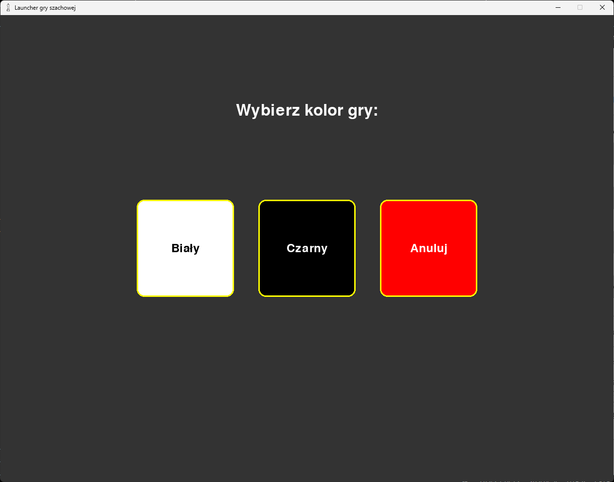
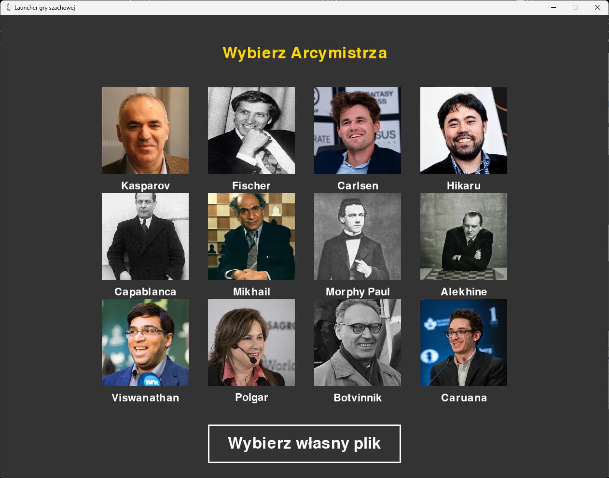

Po wybraniu tej opcji najpierw ukaże się nam ekran wyboru koloru naszych figur:
Znajduje się tam także przycisk pozwalający na anulowanie partii i powrót do ekranu głównego.
Następnie zobaczymy opcję wyboru arcymistrza, z którym chcemy się zmierzyć:
Jeżeli chcemy skorzystać z pliku z własnymi danymi posunięć arcymistrza, należy wybrać przycisk Wybierz własny plik
Jednak przed tym trzeba przekonwertować plik PGN na JSON korzystając z naszego konwertera PGN na JSON.
Oferujemy plik super arcymistrz.json, który zawiera największą bazę ruchów spośród wszystkich arcymistrzów.
 Przed rozpoczęciem gry ukaże się nam także ekran wyboru czasu gry.
Przed rozpoczęciem gry ukaże się nam także ekran wyboru czasu gry.

Po prawej stronie możemy zobaczyć:
- Kolor gracza, do którego należy kolej.
- Czas gracza grającego figurami czarnymi.
- Czas gracza grającego figurami białymi.
- Przycisk do cofnięcia ostatniego ruchu. Więcej o cofaniu ruchów
- Przycisk do wyjścia z obecnej gry.
W przypadku braku ruchu w bazie danych gier arcymistrza korzysta on z algorytmu 'Minimax'.
Przydatne strony:
Jak poruszać figurami?Widok dla nerdów